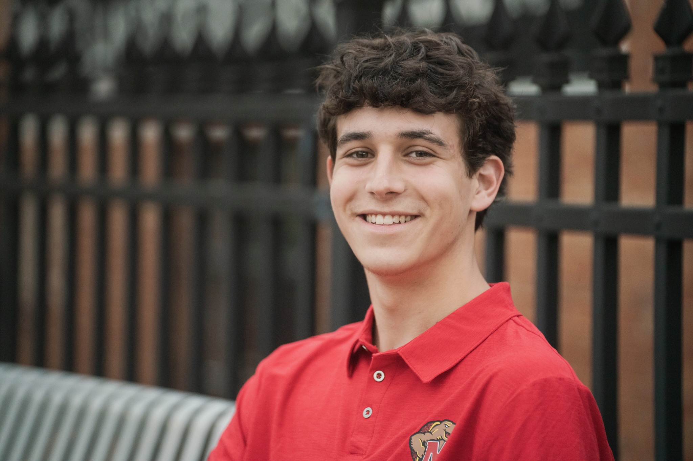

About Me
I'm a journalism student at the University of Maryland's Philip Merrill College of Journalism with a passion for sports broadcasting and storytelling. Through WMUC Sports, I've gained hands-on experience calling live college games, preparing game notes and bringing the action to listeners.
My experience also includes announcing high school sports and developing skills in reporting, interviewing and video production. I hope to build a career in sports media, combining my love of the game with clear, engaging journalism.
Experience
August 2025 – Present
Student Broadcaster / Play-by-Play Announcer
WMUC Sports • College Park, MD
Call live University of Maryland sporting events, research player statistics and team storylines, and prepare game notes to provide informed commentary and real-time analysis.
June 2025 – Present
Camp Counselor
Camps Airy and Louise • Thurmont, MD
Supervise more than 20 campers, lead daily activities and help build teamwork and leadership skills. Recognized as Rookie of the Year for leadership and reliability.
August 2022 – May 2025
Freelance High School Announcer
Oakdale High School • Frederick, MD
Provided play-by-play commentary for more than 20 basketball, football and soccer games. Researched teams and players before games and developed live communication and game-awareness skills.
Education
EXPECTED MAY 2029
University of Maryland
Philip Merrill College of Journalism
Bachelor of Arts in Journalism
Dean's List, Fall 2025
Schanwald Sports Management Program
Sports Business Society
Skills
Broadcasting & Reporting
Play-by-play commentary, sports analysis, interviewing, news writing, research and public speaking.
Technical Skills
Adobe Premiere Pro, video editing, SQL, PostgreSQL and data analysis.
Web Design
HTML, CSS and Bootstrap.